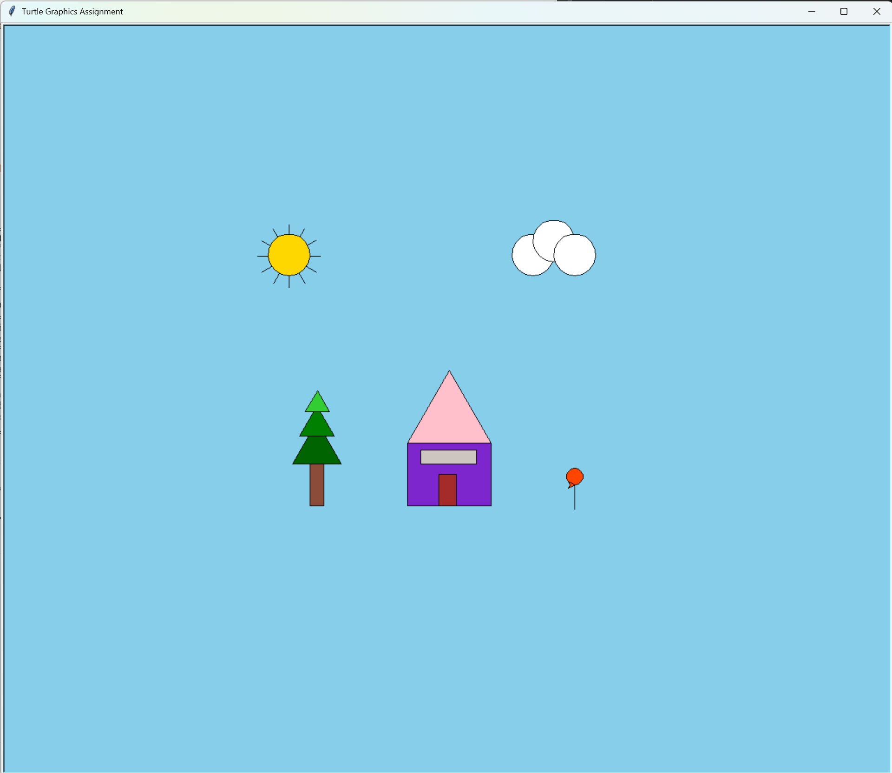

About the Project
This project is about creating a graphical scene using Python's Turtle graphics module. My scene features a house with a pink roof, a layered green tree, a golden sun with rays, white clouds, and an orangeish red flower. I used the provided building block functions such as draw_rectangle, draw_triangle, draw_circle, and jump_to to create composite shapes that make up the full scene. Each element of the scene is drawn using its own set of function calls inside draw_scene, keeping the code organized and readable. This was my first time working with Turtle graphics and it helped me understand how coordinates, colors, and shapes work together in Python.
Sample Code
This code draws the tree using a brown rectangle for the trunk and three layered triangles in different shades of green to create depth and a realistic look:
• t: The turtle graphics object for drawing
• jump_to(t, x, y): Moves the turtle to a position without drawing
# treetrunk
jump_to(t, -200, -90)
draw_rectangle(t, 20, 60, "salmon4")
# treeleaves1 bottom
jump_to(t, -225, -90)
draw_triangle(t, 70, "darkgreen")
# treeleaves2 middle
jump_to(t, -215, -50)
draw_triangle(t, 50, "green")
# treeleaves3 top
jump_to(t, -207, -15)
draw_triangle(t, 35, "limegreen")Final Scene
Here's the completed turtle graphics scene featuring a purple house with a pink roof, a layered green tree, a golden sun with rays, white clouds, and an orangeish red flower on a sky blue background:

The scene combines multiple composite shapes built from basic turtle graphics functions. The house uses rectangles for the base, window, and door, with a triangle for the pink roof. The tree is built from three layered triangles in darkgreen, green, and limegreen on a salmon4 trunk. The sun uses a filled gold circle with 12 rays drawn in a loop, and the clouds are made from three overlapping white circles. The flower is a small orangered4 circle on top of a straight stem.